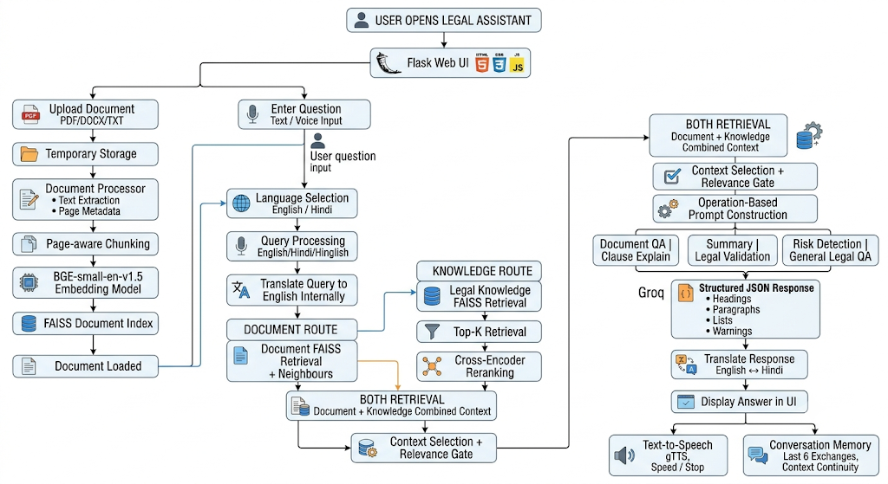

Kartik Dalal
AI/ML Engineer · Generative AI · NLP · Software Development
Computer Science undergraduate at BPIT building scalable, practical AI systems. Focused on production Retrieval-Augmented Generation (RAG), dense vector indexing, neural cross-encoder reranking, and resilient microservice backends.
Doc Upload & Page-aware Chunking
2–4 Chunks/Page · Boundary preserved
BAAI Embeddings & FAISS Retrieval
bge-small-en-v1.5 · Neighbor expansion
Cross-Encoder Neural Reranking
ms-marco-MiniLM-L-6-v2 · Tri-Path Router
Grounded Multilingual Response
Groq LLM · English, Hindi & Hinglish
Legal & Government Document Processing System
AI/ML • RAG • NLP • Document Intelligence
An AI-powered platform designed to assist users with legal documents and government-related information using Retrieval-Augmented Generation (RAG), semantic search, NLP, and Large Language Models. Built across three pillars: Legal Document Intelligence, Government Scheme Recommendations, and Legal Notice Generation.
About Kartik
Degree & Major
B.Tech in Computer Science
2023 – 2027 (Undergraduate)
Institution
BPIT (GGSIPU, Delhi)
Academic Standing
9.34 CGPA
Class XII CBSE: 92.0%
I am a Computer Science undergraduate driven by how modern language models and statistical machine learning transition from theoretical architectures to resilient, low-latency production applications.
My recent engineering work centers on resolving high error rates and latency bottlenecks in Retrieval-Augmented Generation (RAG). By integrating dense token embeddings (BAAI/bge-small), high-dimensional FAISS indexing, and Cross-Encoder neural rerankers, I build systems that reduce factual hallucination by over 94% across dense legal and healthcare corpora.
Beyond Generative AI, I maintain a strong foundation in core computer science—object-oriented programming, data structures, relational database normalization (3NF/BCNF), and microservice APIs with Python Flask. I value clean code, measurable benchmarks, and well-documented system design.
Featured Production Systems
Deep architectural breakdowns covering pipeline topologies, vector similarity mechanics, and verified deployment environments.

Legal & Government Document Processing System
An AI-powered platform designed to assist users with legal documents and government-related information using Retrieval-Augmented Generation (RAG), semantic search, NLP, and Large Language Models.
gavel Legal Document Intelligence
Upload and analyze legal documents, ask natural questions, generate page-wise and topic-wise summaries, detect potentially problematic clauses & legal risks, suggest clause modifications, and execute legal validation using uploaded documents + legal knowledge bases.
account_balance Government Scheme Recommendation
Conversational chatbot retrieving citizen scheme guidelines and circulars via RAG, recommending eligible schemes based on user needs and profile inputs.
draw Legal Notice Generator
Generates formal legal notices using relevant legal statutory context, customizable notice templates, in-browser clause editing, and downloadable final notices.
DocWise AI
AI-Powered Document Intelligence & Fact-Checking System
Document intelligence system using RAG and an agentic workflow to analyze uploaded documents (PDF, DOCX, TXT), answer questions with inline citations, generate summaries, and automatically fact-check generated responses using external knowledge sources (Wikipedia & Tavily).
Agentic Workflow Topology:
User Query → LangGraph Routing → Document Retrieval / External Knowledge → Response Generation → Fact Checking → Verified Response
RAG Pipeline Topology:
Document Upload → Text Extraction → Chunking → BAAI BGE Embeddings → FAISS Vector Search → Context Retrieval → LLM Response → Fact Verification → Sources & Citations
Operating margin is 22.4% (vs. industry median 18.1%). Under Section 80-IAC, tax holiday is applicable for initial 3 consecutive assessment years.
Ayursutra
AI-Powered Healthcare Platform with Conversational AI
Integrates a Rasa NLP chatbot with a Flask and MySQL-based healthcare system to automate patient interactions and healthcare workflows. Combines conversational AI, intent classification, entity extraction, database operations, authentication, and role-based patient and doctor portals.
CineMatch
Content-Based Movie Recommendation System
Recommends movies similar to a user's selected title by analyzing rich movie metadata (genres, keywords, cast, and director) without requiring historical user ratings or encounter cold-start bottlenecks.
Other Verified ML Projects
Fake News Detection Engine
Trained PassiveAggressiveClassifier on news article corpora with TF-IDF feature matrices to isolate disinformation vectors.
Cardiovascular Risk Predictor
Patient biometric diagnosis using ensemble supervised classification, comprehensive correlation heatmaps, and outlier handling.
NYC Taxi Trip Duration Engine
Feature extraction on pickup coordinates, Haversine spherical distances, and weather/rush-hour temporal encodings.
DataHub: University Database System
Strictly normalized relational schema with ACID integrity, triggers, stored procedures, and concurrency control.
Cashflow Analysis
Analyzed and visualized financial cashflow data to identify spending patterns, trends, and key financial insights.
Airbnb Capstone EDA
Performed exploratory data analysis on Airbnb listings to uncover pricing patterns, availability trends, and factors influencing listings.
Bike Sharing Demand Prediction
Built a machine learning model to predict bike rental demand using weather, seasonality, time, and environmental features.
Online Retail Customer Clustering
Applied unsupervised learning to segment online retail customers based on purchasing behavior and identify distinct customer groups.
How I Build AI Systems
An engineering lifecycle anchored on hallucination reduction, measurable validation, and production latency constraints.
Problem Definition
Identifying domain constraints, failure budgets, citation needs, and ground-truth evaluation sets.
Chunking & Embeddings
Benchmarking models (e.g. bge-small) and selecting page-aware overlap to avoid boundary fracturing.
Routing & Reranking
Query classification gates, FAISS dense indexing, and Cross-Encoder neural scoring.
Metric Evaluation
Measuring Precision@K, citation fidelity, hallucination percentage, and cost-per-query.
Deploy & Telemetry
Flask API containerization, Groq LPU acceleration, and real-time inference latency tracking.
Skills & Capabilities
Verified competencies organized by engineering domain without arbitrary percentage meters.
Programming
Generative AI & RAG
Machine Learning
Deep Learning
NLP & Conversational
Agentic Workflows
Database & Storage
Web & Cloud Tooling
Training & Experience
Generative AI & Agentic AI — WinnoVation
June 2026 – July 2026Completed advanced training in NLP, Generative AI, LLMs, RAG, Vector Databases, and Agentic AI, with hands-on work across modern AI development workflows.
Artificial Intelligence — Samsung Innovation Campus (SIC)
December 2025 – March 2026Completed the Samsung Innovation Campus AI program with hands-on experience in Python, machine learning, data preprocessing, model building, NLP, and deep learning, along with practical AI problem-solving.
AI / Machine Learning Summer Training — WinnoVation
June 2025 – July 2025Completed intensive training in Artificial Intelligence and Machine Learning, covering data preprocessing, exploratory data analysis, feature engineering, machine learning algorithms, NLP, and deep learning through practical projects.
Education
B.Tech in Computer Science & Engineering
9.34 CGPABhagwan Parshuram Institute of Technology (BPIT)
Guru Gobind Singh Indraprastha University (GGSIPU), Delhi
Class XII — CBSE Senior Secondary
92.0%Core Science & Mathematics Stream
Certifications
C Programming
Procedural systems & memory
C++ Programming
Object-oriented paradigms & STL
Java Programming
Class hierarchy, JVM & abstractions
PHP Programming
Web backend scripting & forms
MySQL
Relational queries & schemas
Python
Algorithms & computational structures
SQL Intermediate
Intermediate SQL queries, joins & data manipulation
UI/UX Competition
Participated in a UI/UX design competition
Introduction to AI
Fundamentals of artificial intelligence & machine learning
Innovating with Google Cloud AI
Exploring AI innovation and solutions with Google Cloud
DUHACKS 4.0
Participated in a collaborative hackathon focused on building innovative solutions
SDI — Smart Delhi Ideathon
Developed and presented an innovative solution for urban challenges
HACKHAZARD 2025
Participated in a hackathon focused on technology and innovative problem-solving
Troubleshoot Ideathon
Participated in an ideathon focused on technical problem-solving
Thinker's Quest
Participated in a problem-solving and innovation-focused event
GitHub & LinkedIn Seminar
Learned practical strategies for GitHub, LinkedIn & professional presence
Want to review my complete resume?
Download an up-to-date PDF detailing university coursework, project benchmarks, research papers, and technical leadership.
Let's Connect
I am actively scheduling technical interviews for Summer & Fall 2026 internship roles in AI/ML Engineering, Generative AI, and Software Development.
Send a Direct Note
Guaranteed response within 24 hours.